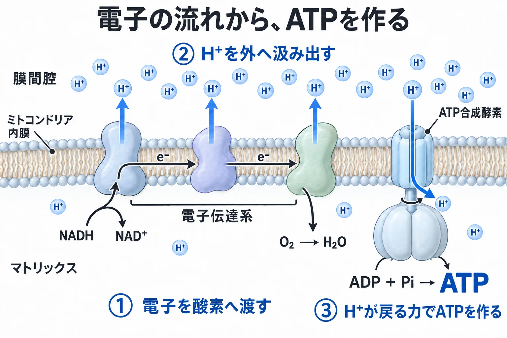
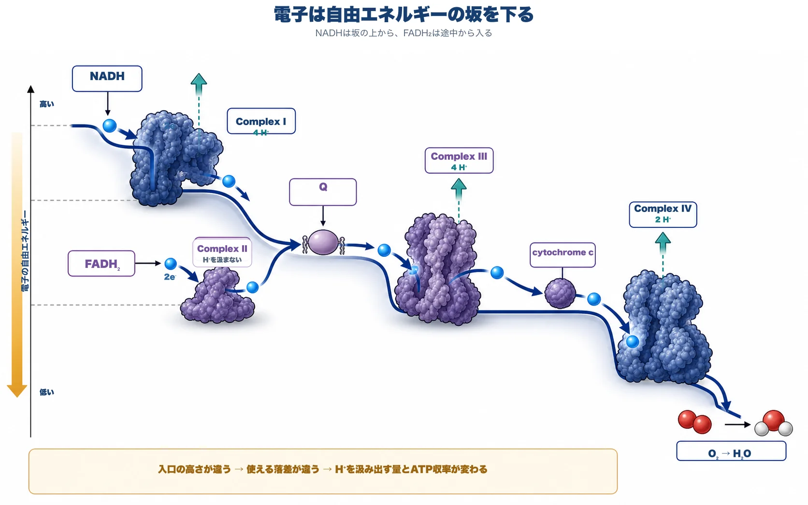
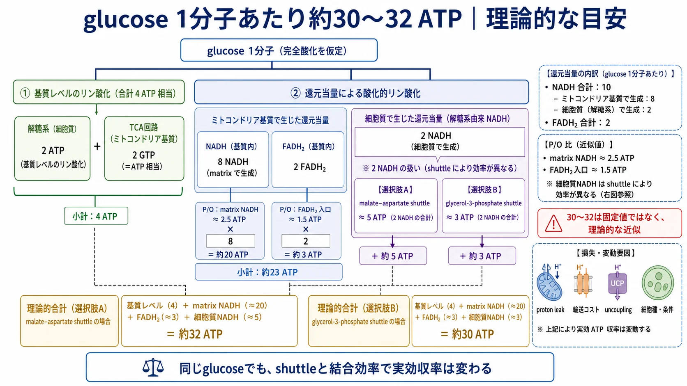
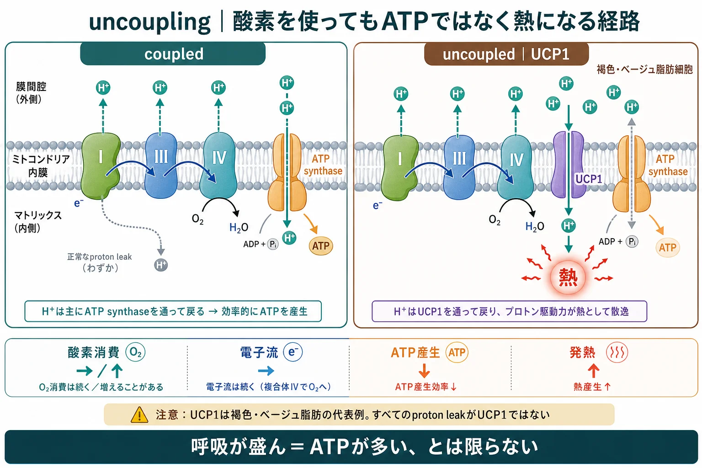

基礎 ／ エネルギー
電子伝達系electron transport chain
公開 2026-08-24 ／ 最終更新 2026-09-13
細胞がタンパク質を作り、物質を運び、傷んだ組織を修復するにはATPが必要です。ミトコンドリアでは、栄養素から取り出した電子を酸素へ渡す過程を利用して、そのATPを作ります。
この章の一言
電子の流れでH⁺（水素イオン）を汲み出し、H⁺が戻る力でATPを作る。この二つの働きを、ミトコンドリアの内膜がつないでいます。
1 電子の流れを、ATP合成につなぐ
解糖系・TCA回路・β酸化では、栄養素から電子を取り出してNADHなどに受け渡します。電子伝達系は、その電子を受け取るミトコンドリア内膜のタンパク質群です。同じ内膜にあるATP synthase（ATP合成酵素）と協働して、ATPを作ります。
内膜の内側をmatrix（マトリックス）、内膜と外膜の間を膜間腔と呼びます。以下の図では、膜間腔を上、マトリックスを下に置いています。

電子伝達系とATP synthaseが協働するこのATP産生を、酸化的リン酸化と呼びます。
2 電子を渡しながら、H⁺を汲み出す
内膜の主要な酵素複合体は、Complex I・II・III・IVと呼ばれます。図のローマ数字は、この複合体を表します。
NADHから入った電子は、酸素まで受け渡される
NADHが渡した電子を、Q（ubiquinone、CoQ10）とcytochrome cが複合体の間で運びます。最後にComplex IVで酸素（O₂）が電子を受け取り、水（H₂O）になります。
H⁺の濃度差と電位差を作る
電子は、全体としてエネルギーの高い状態から低い状態へ移ります。Complex I・III・IVは、そのときに放出されるエネルギーをH⁺の汲み出しに使います。

汲み出されたH⁺は、内膜の外側に多くなります。内膜を自由には通れないため、膜の両側にH⁺の濃度差と電位差（電気化学勾配）が生まれます。この差によってH⁺が内側へ戻ろうとする力が、proton motive force（プロトン駆動力）です。
3 H⁺が戻る力で、ATP synthaseがATPを作る
H⁺が戻ると、ATP synthaseの中心軸が回転し、ADPと無機リン酸（Pi）からATPが作られます。ATPは輸送体を通って細胞質へ送られます。
細胞質のNADHは、電子をshuttleで渡す
解糖系でできるNADHは細胞質にあり、その分子はミトコンドリア内膜を直接通れません。そこで、代謝物の反応と輸送を組み合わせたshuttle（シャトル）によって、持っている電子を電子伝達系へ渡します。
malate–aspartate shuttle（リンゴ酸–アスパラギン酸シャトル）はComplex Iへ、glycerol-3-phosphate shuttle（グリセロール3-リン酸シャトル）はQへ電子を渡します。Iから入る方が、H⁺の汲み出しに使える段階が一つ多いため、得られるATPも多くなります。
約30〜32 ATPは、入口の違いを含めた理論値
glucose 1分子を完全に酸化すると、約30〜32 ATPを得られると計算されます。解糖系で生じる2 NADHをmalate–aspartate shuttleで渡すと約32 ATP、glycerol-3-phosphate shuttleで渡すと約30 ATPです。
これは理論値です。実際のATP産生量は、H⁺の漏れや脱共役（§5）、細胞の状態などでも変わります。

4 電子の一部が途中で酸素へ渡ると、ROSが生じる
Complex IVでは、O₂は水まで還元されます。一方、途中のComplex IやIIIなどでO₂が電子を1個だけ受け取ると、superoxide（スーパーオキシド、O₂•⁻）が生じます。これはROS（reactive oxygen species、活性酸素）の一つです。
細胞にはROSを処理する抗酸化システムがあり、少量のROSは情報伝達にも使われます。ROSの発生が処理を上回ると、膜・タンパク質・DNAの損傷につながります。
電子の受け渡しが滞るときに、ROSが増えやすい
糖や脂肪から電子が多く供給される一方、ATPを使う量が少ないと、H⁺の勾配が高く保たれ、電子が流れにくくなります。電子伝達系や内膜が傷んだ場合も、電子の受け渡しが滞ります。
こうした代謝とROSの関係は、病態にもつながります。高濃度glucoseにさらした培養血管内皮細胞では、ミトコンドリア由来のsuperoxideを抑えると、糖化や炎症につながる複数の反応が抑えられました（Nishikawa et al., Nature 2000. PMID 10783895）。
虚血後に血流が戻る再灌流も、ROSが急増する場面です。動物実験では、虚血中に蓄積したsuccinateが再灌流時に酸化され、電子の逆流を介してROSを増やすことが示されています（Chouchani et al., Nature 2014. PMID 25383517）。
ミトコンドリア自身も、ROSによって傷つく
ROSは内膜の脂質・タンパク質や、mtDNA（ミトコンドリアDNA）も傷つけます。mtDNAには、電子伝達系とATP synthaseを構成する13種類のタンパク質の情報が含まれています。
これらが傷つくと、ATP産生や電子の受け渡しが低下し、さらにROSが増えることがあります。損傷した部分を除去・更新する仕組みはミトコンドリア品質管理、ROSの種類と抗酸化システムは酸化ストレスと抗酸化で扱います。
5 H⁺の戻る力は、熱産生にも使われる
H⁺がマトリックスへ戻る経路には、ATP synthaseのほかにUCP1などもあります。UCP1を通るH⁺の流れはATP合成を駆動せず、勾配のエネルギーが熱として散逸します。これをuncoupling（脱共役）と呼びます。

UCP1は、寒いときの熱産生を担う
褐色脂肪・ベージュ脂肪のUCP1は、寒いときに熱を作って体温を守ります。脂肪酸やglucoseを使って発熱する、非ふるえ熱産生（non-shivering thermogenesis）の仕組みです。
成人でも、穏やかな寒冷刺激で褐色脂肪が活動し、エネルギー消費や糖・脂質の利用が増えることが示されています。減量や健康寿命延長への効果は、別に検証が必要です（PMID 23780370；PMID 25056438）。
この章の到達点
- 電子伝達系は、電子をO₂へ渡す過程でH⁺を汲み出します。O₂は最後に水になります。
- ATP synthaseは、H⁺が戻る力でATPを作ります。電子の流れとATP合成は、内膜を隔てたH⁺の勾配でつながっています。
- 細胞質NADHの電子はshuttleで渡されます。入口の違いが、glucose 1分子あたり約30〜32 ATPという理論値の幅を生みます。
- 電子の一部が途中でO₂へ渡るとROSが生じ、抗酸化システムによる処理が必要になります。
- H⁺がUCP1を通って戻ると熱産生へつながるため、酸素消費量とATP産生量は同じではありません。
この章の更新
- 電子・H⁺・ATPの流れを中心に本文と図を整理し、伝わりやすい旧イラストを再採用
- 初公開